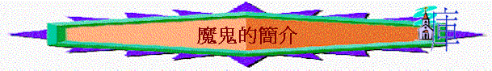

一. 魔鬼的簡介
1.由來
A.是其中一種的天使----基路伯
「……你無所不備，智慧充足，全然美麗。」結28：12
原是受造的基路伯之一（結28：11-19），是神所立的天使長。
★有崇高的事奉：在神面前侍立
★有完備的恩賜：無所不備，智慧充足，能使用精美的鼓笛（結28：13下），因牠是精通音樂的。
★有屬靈的經歷：可以如此親近神
B.卻敗落了
a.
驕傲自大
「耶和華的話又臨到我說：
「人子啊，你對推羅君王說，主耶和華如此說：因你心裡高傲，說：我是神；我在海中坐神之位。你雖然居心自比神，也不過是人，並不是神！」結28:1
b. 欲與神同等
「明亮之星，早晨之子啊，你何竟從天墜落？你這攻敗列國的何竟被砍倒在地上？你心裡曾說：我要升到天上；我要高舉我的寶座在神眾星以上；我要坐在聚會的山上，在北方的極處。我要升到高雲之上；我要與至上者同等。我要升到高雲之上；我要與至上者同等。賽14:12-14
C.被神驅逐
「因你貿易很多，就被強暴的事充滿，以致犯罪，所以我因你褻瀆聖地，就從神的山驅逐你。遮掩約櫃的基路伯啊，我已將你從發光如火的寶石中除滅。」以西結書 28:16
∼魔鬼原來是天使長。因牠犯罪被神驅逐到空中，成了魔鬼
2.名稱
「在天上就有了爭戰。米迦勒同他的使者與龍爭戰，龍也同他的使者去爭戰，並沒有得勝，天上再沒有他們的地方。大龍就是那古蛇，名叫魔鬼，又叫撒但，是迷惑普天下的。他被摔在地上，他的使者也一同被摔下去。」啟12:7-9
A.魔鬼
這個名字的意思是「毀謗者」。
B. 撒但
撒但是「反對者」（抵擋者）（太4：10小字）、「敵對者」的意思
C. 大龍（大紅龍）
「天上又現出異象來：有一條大紅龍，七頭十角；七頭上戴著七個冠冕。他的尾巴拖拉著天上星辰的三分之一，摔在地上。龍就站在那將要生產的婦人面前，等他生產之後，要吞吃他的孩子。」啟12:3-4
〜「大紅龍」就是魔鬼，牠的權柄，勢力是大的，與龍的兇殘，「紅」可代表血，牠出現，令很多流血的事發生。
〜「七頭十角」啟17:9
頭可以代表王，或國，魔鬼在世界掌權，擁有牠的國度，在過往埃及、亞述、巴比倫、瑪代波斯、希臘、羅馬，七大古國有牠的權柄(都與以色列有關)，十角，可以指將來世界的十個王(啟17:12)七，及十代表完整，可能指整體國度，王權都似乎是撒但掌權。
〜「尾巴拖拉著天上星辰的三分之一」在啟示錄中尾巴通常指傷人，害人的工具，而「星辰的三分之一」應指墜落的天使(伯38:7)；魔鬼連同墜落的天使被驅逐於天上，摔在地上。
〜「吞吃他的孩子」魔鬼在地上要攻擊以色列的後裔--耶穌
D.
那古蛇
「耶和華
神所造的，惟有蛇比田野一切的活物更狡猾。蛇對女人說：「神豈是真說不許你們吃園中所有樹上的果子嗎？」」創3:1
∼是古蛇，是那條進入伊甸樂園，引誘亞當和夏娃犯罪的蛇（創3：1）。
E.
彼列
「基督和彼列有甚麼相和呢？……」林後6：15請注意小字「彼列就是撒但的別名」。彼列是希伯來文的土語，是「匪徒」的意思。
3.工作
A.令人犯罪
B.叫人跌倒
C.令人不信
D.破壞神計劃
~在下一堂有詳細交待
4.可用的媒介
A.鬼魔
「我乃是說，外邦人所獻的祭是祭鬼，不是祭神。我不願意你們與鬼相交。你們不能喝主的杯又喝鬼的杯，不能吃主的筵席又吃鬼的筵席。」林前10:20-21
「聖靈明說，在後來的時候，必有人離棄真道，聽從那引誘人的邪靈和鬼魔的道理。」提前4:1
「親愛的弟兄啊，一切的靈，你們不可都信，總要試驗那些靈是出於神的不是，因為世上有許多假先知已經出來了。」約壹4:1
「並沒有得勝，天上再沒有他們的地方。大龍就是那古蛇，名叫魔鬼，又叫撒但，是迷惑普天下的。他被摔在地上，他的使者也一同被摔下去。」啟12:8-9
〜撒但有牠的差役(叛悖的天使)----鬼魔，牠們會用偶像、假神、虛假的道理、邪靈迷惑人
B.世界
「以後我不再和你們多說話，因為這世界的王將到。他在我裡面是毫無所有；」約14:30
「不要愛世界和世界上的事。人若愛世界，愛父的心就不在他裡面了。因為凡世界上的事，就像肉體的情慾，眼目的情慾，並今生的驕傲，都不是從父來的，乃是從世界來的。」約壹2:15-16
〜撒但暫時是世界的王，牠可用世界的事引誘信徒不愛神，被世界牽引犯罪離開主
〜撒但也會用世界的困難攻擊信徒，令他們在苦難中放棄信仰。
C.人
a.不信的人
「人子要差遣使者，把一切叫人跌倒的和作惡的，從他國裡挑出來，丟在火爐裡；在那裡必要哀哭切齒了。」太13:41-42
「犯罪的是屬魔鬼，因為魔鬼從起初就犯罪。神的兒子顯現出來，為要除滅魔鬼的作為。」約壹3:8
「我們知道，我們是屬神的，全世界都臥在那惡者手下。」約壹5:19
〜不信的人在魔鬼權勢下，牠會用他們叫信徒跌倒，引誘信徒犯罪
b.人的私慾
「夫妻不可彼此虧負，除非兩相情願，暫時分房，為要專心禱告方可；以後仍要同房，免得撒但趁著你們情不自禁，引誘你們。」林前7:5
〜牠利用人性的私慾、弱點引誘信徒犯罪
D.敵基督
∼敵基督（antichrist）anti
這個介詞，可以譯為敵對（against）或代表，代替（in place of）基督，在七年大災難末世中出現，是從無底坑上來，從邪惡大本營上來，邪惡的魔鬼代表，叫人敬拜自己，敵擋基督，迷感眾人，所以無怪乎帖後２：３用「大罪人」，「沉淪之子」，形容敵基督，的確他所作的是惡行，至終是引向沉淪的，也使人沉淪（啟１９：２０）；也是將來世界的盟主，世界之王。
E..撒但自己
a.遍地尋找
「務要謹守，警醒。因為你們的仇敵魔鬼，如同吼叫的獅子，遍地遊行，尋找可吞吃的人。」彼前5:8
b.放下歪念
「吃晚飯的時候，魔鬼已將賣耶穌的意思放在西門的兒子加略人猶大心裡。」約13:2
c.充滿人心
「他吃了以後，撒但就入了他的心。耶穌便對他說：「你所做的，快做吧！」」約13:27
「彼得說：「亞拿尼亞！為什麼撒但充滿了你的心，叫你欺哄聖靈，把田地的價銀私自留下幾分呢？」徒5:3
d.主動試探
「四十天受魔鬼的試探。那些日子沒有吃什麼；日子滿了，他就餓了。」路4:2
5.限制的能力
Ａ.掌死權
∼可叫人犯罪，令人在死的定律中，不能脫離
∼牠也有殺害人的事件，但若神不容許，牠不能擊殺人（像不能擊殺約伯）
B.世界的王
∼但神也掌管萬事，即或魔鬼努力作工，但神也可用魔鬼來管教人，牠仍在神的掌管中
C.有異能
∼但不能勝過神的能力，聖靈也可攔阻撒但的工作
D.遍地遊行
∼但在天上沒有牠的仕處，有聖靈在人內心，牠也不輕易充滿人的心
E.智慧充足
∼但從約伯記，看到牠似乎仍未瞭解約伯的敬虔是真實的，但神卻完全知道！
６.至終的結局
A.暫時的被捆
「我又看見一位天使從天降下，手裡拿著無底坑的鑰匙和一條大鍊子。他捉住那龍，就是古蛇，又叫魔鬼，也叫撒但，把他捆綁一千年，扔在無底坑裡，將無底坑關閉，用印封上，使他不得再迷惑列國。等到那一千年完了，以後必須暫時釋放他。」啟20:1-3
B.牠最後的反擊
a.撒但的得釋
「那一千年完了，撒但必從監牢裡被釋放，出來要迷惑地上四方（原文作角）的列國，就是歌革和瑪各，叫他們聚集爭戰。他們的人數多如海沙。」啟20:7-8
〜撒但在一千年完後，會被釋放迷惑列國，因為在千禧年中，人的壽命特長，不會有死亡，所以會有很多子孫，他們的子孫是否真正順服神呢？可能在環境有利情況下(沒有試探，沒有仇殺，沒有缺乏，沒有人不曉神的話)，他們表面順服神，但神給人最後一個選擇權，可以順服及不順服(這才是真正的自由)，因此用撒但為工具迷惑人，也試煉人內�堛熄隍A。
「出來要迷惑地上四方（原文作角）的列國，就是歌革和瑪各，叫他們聚集爭戰。他們的人數多如海沙。他們上來遍滿了全地，圍住聖徒的營與蒙愛的城，就有火從天降下，燒滅了他們。」啟20:8-9
「人子啊，你要面向瑪各地的歌革，就是羅施、米設、土巴的王發預言攻擊他，」結38:2
「波斯人、古實人，和弗人（又作呂彼亞人），各拿盾牌，頭上戴盔；歌篾人和他的軍隊，北方極處的陀迦瑪族和他的軍隊，這許多國的民都同著你。」結38:5-6
〜提及「歌革」和「瑪各」，以西結書曾用過以上名字，形容有北方的地方及領袖聯合其它民族，國家來到以色列地。
〜此處可能借用來表達有敵神的勢力聯合地上四方的列國，要圍住聖徒的營與蒙愛的城(應指耶路撒冷)
C.牠至終的刑罰
「他們上來遍滿了全地，圍住聖徒的營與蒙愛的城，就有火從天降下，燒滅了他們。那迷惑他們的魔鬼被扔在硫磺的火湖裡，就是獸和假先知所在的地方。他們必晝夜受痛苦，直到永永遠遠。」啟20:9-10